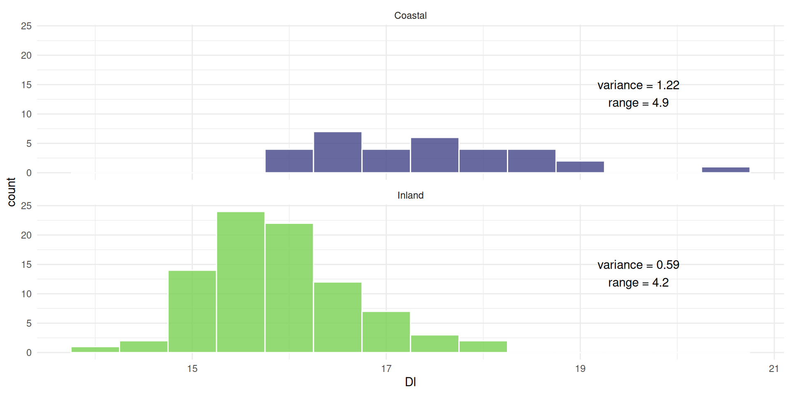
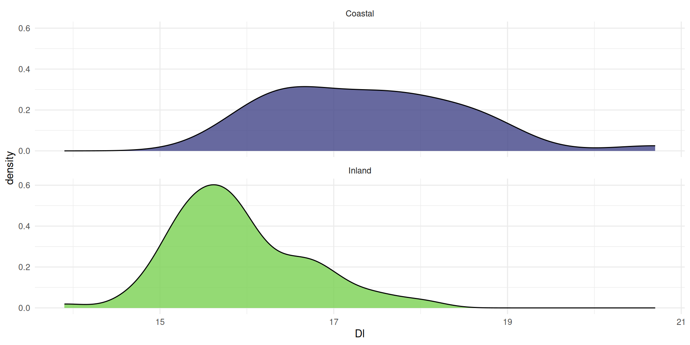

Exploratory Data Analysis (EDA)
EDA is possibly the
single most important concept
when working with data
Popularised by John Tukey in his 1977 textbook, Exploratory Data Analysis
A basic problem about any body of data is to make it more easily and effectively handleable by minds—our minds, her mind, his mind[, their mind].
John Tukey
Find the main characteristics of your data through
descriptive statistics
and
visualisations
You should explore your data before doing anything else
We can visualise how a variable
is distributed with a histogram
In histograms

measurements are placed in bins of a certain size
For example, all measurements from 13.79-14.29 are in the first bin
14.29-14.79 are in the second, etc…
The height of the bin is determined by how many observations are placed in the bins
which allows us to see where most observations lie
We can also separate the groups

the mean is not always aligned with the most observations
If a distribution is skewed, the mean moves off center

and the median is closer to the most observations
The width of a plot is not a great indicator of dispersion
It’s more of a combination between width and height
Tall and narrow = low dispersion (small variance)
Short and wide = high dispersion (large variance)
Box plots (a.k.a., box and whiskers)

are a better indicator of dispersion
They give us the quartiles
25% (dashed) and 75% (dotted)
The length of the box is the Inter-Quartile Range (IQR)
calculated as the 75% quartile minus 25% quartile
Length of the whiskers are 1.5 times the IQR
Outliers are points falling outside the whiskers
Box plots are not perfect, though
They hide the shape of the distribution,
and the number of observations
We could combine with a histogram

Violin plots consist of mirrored density plots
A density plot is a ‘smoothed’ histogram

calculated using a Kernal Density Estimate
The area under the curve is always 1, because the
the probability of all the values cannot exceed 1
A point on the curve is the estimated probability density
Categorical variables require different types of plots
Like bar plots
Which simply show counts of values
Gridlines
allow readers to see the actual values
Pie charts can also show this
But should be used sparingly…
Pie charts And if you like it

you better put a label on it
Bar plot axes can be rearranged to improve interpretation

For example, ordered by frequency
Show multiple variables
stacked
Show multiple variables

side-by-side
Show multiple variables

proportional
Whatever you intend to do with your data
first make sure you know what they look like
This will help you interpret your data